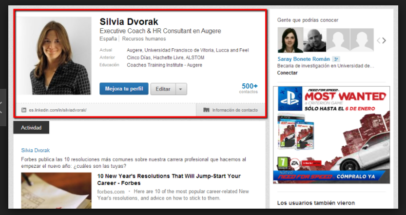
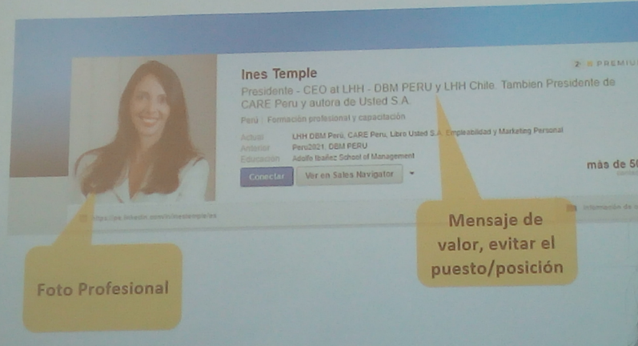
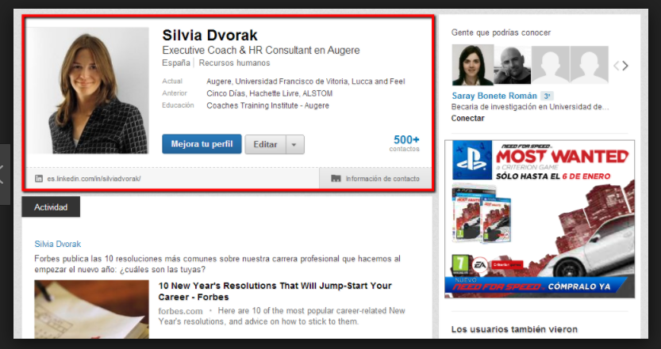
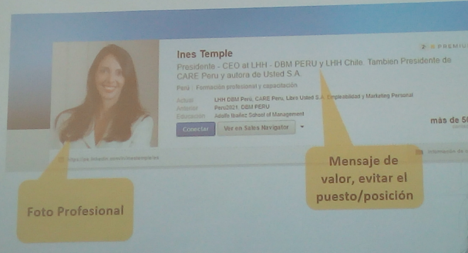

Tener cuidado como te muestras en las redes sociales.
Linkedln
Tú Linkedln debe tener: una foto, Nombre y apellido, frase que mejor las represente y un background.
 



Tú background debe contener:
1.- Experiencia, 2.- Educación, 3.- Idiomas, 4.- Proyectos, 5.- Reconocimientos y premios, 6.- Experiencia de voluntariado y causas benéficas, 7.-Seguir personas y grupos, 8.- Noticias